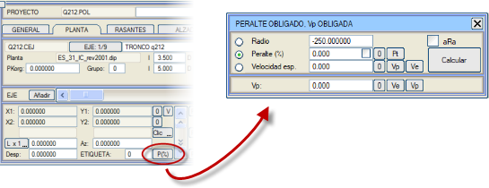
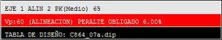

| |
|
YATAY GÜZERGAH: ZORUNLU DEVER VE ZORUNLU PROJE HIZI
|
YATAY GÜZERGAH'taki [P (%)] düğmesi, bir güzergah elemanının zorunlu deverini ve/veya zorunlu proje hızını yatay güzergah tanımından itibaren tanımlamak için bir iletişim kutusu açar: 
Açılan kutu şunları içerir:
Grafik ekranda, tasarım tablosunun adının üzerinde, mevcut güzergah elemanının proje hızı ve bu değerin nereden alındığı (eksen, kesim veya eleman) kırmızı bir arka planla vurgulanır. Zorunlu dever durumunda, bu değer de gösterilir. Bu işlevsellik, yolları hız türlerine göre sınıflandıran güzergah yönetmelikleri için çok kullanışlıdır. [Hesapla] düğmesi, diğer iki değere bağlı olarak üç değerden birini belirlemeyi sağlar:
Eğer aRa kutucuğu etkinse, klotoidler de yönetmeliğe otomatik olarak uyarlanacak şekilde değiştirilir. Zorunlu deverlerin değerleri, güzergah elemanlarının diğer verileriyle birlikte .cej dosyalarına kaydedilir. Yatay güzergahta klotoid önerisi kullanıldığında, özgül hıza bağlı olan değerler için zorunlu dever dikkate alınır. Yönetmelik kontrolü yapılırken, özgül hızın zorunlu devere bağlı olabileceği de dikkate alınır. Deverler menüsünde, zorunlu deverler varsa bir uyarı gösterilir. Ve dever diyagramı [OTO TABLO] işleviyle belirlenirse, zorunlu deveri olan kurplar tablodaki değer yerine bu değeri alacaktır. Ayrıca, dever görüntüleme diyagramında zorunlu dever bölgeleri gölgeli olarak görünecektir. |